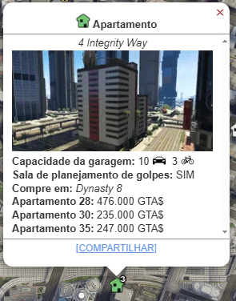
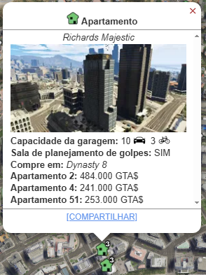
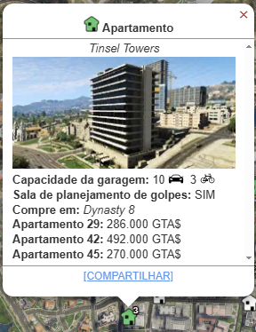
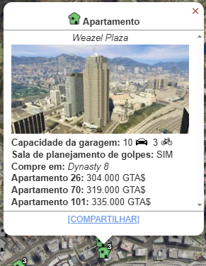
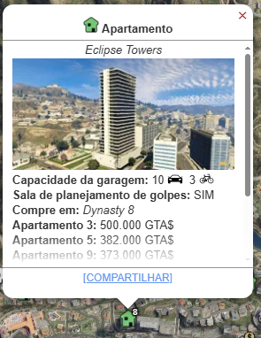

Apartamento
O Apartamento de Luxo e uma aquisição que um jogador de GTA Online faz. Sua função principal não é gerar renda passiva, mas sim desbloquear o conteúdo mais icônico do jogo: Os Golpes Originais de GTA Online (The Original Heists), liderados por Lester Crest.

Metodo de Obter:
Você pode comprar Apartamentos de Alto Padrão no Dynasty 8, que você pode acessar pelo navegador da Internet no seu smartphone. O site pode ser encontrado na aba Dinheiro e Serviços ou inserindo o seguinte URL no seu navegador: www.dynasty8realestate.com
E possivel escolher dentre as 7 opçoes de apartamento de alto padrão, os Valores variam de $ 200.000 - $1.100.000.
- Del Perro Heights: $ 200.000 - $468.000
- 3 Alta Street: $ 217.000 - $223.000
- Integrity Way: $ 235.000 - $ 476.000 
- Richards Majestic: $ 241.00 - $484.000 
- Tinsel Towers: $ 270.000 - $492.000 
- Weazel Plaza: $ 304.000 - $ 335.000 
- Eclipse Towers: $ 373.000 - $ 1.100.000 


Melhorias
O apartamento não possui muitas melhorias uteis, apenas mudança no interior.
- Estilo do interior: $ 200.000 - $ 350.000
Funcionamento e Lucro
O Apartamento é um investimento que se paga rapidamente através da conclusão de missões.
▸ Lucro Principal: Golpes Originais
- Função: O Apartamento de Luxo é a base de operações obrigatória para iniciar e liderar os 5 Golpes Originais de Lester:
- ▸ O Trabalho Fleeca (The Fleeca Job)
- ▸ Fuga da Prisão (The Prison Break)
- ▸ O Ataque ao Humane Labs (The Humane Labs Raid)
- ▸ Financiamento Série A (Series A Funding)
- ▸ O Golpe do Pacific Standard (The Pacific Standard Job)
- Frequência: A série só pode ser completada uma vez como líder na ordem original (com bônus). Após isso, os Golpes podem ser repetidos separadamente (com cooldowns).
- Gestão: Os Golpes Originais exigem de 2 a 4 jogadores para serem concluídos.
▸ Recompensas Únicas
- Bônus de Primeiro Vez: O líder recebe um bônus significativo na primeira conclusão de cada Golpe.
- Bônus de Desafio: Há grandes bônus de pagamento únicos por completar os Golpes em sequência, com o mesmo time ou sem sofrer danos.
O Apartamento de Luxo é um investimento de porta de entrada. Ele é barato, e seu lucro vem exclusivamente da conclusão dos Golpes, que são cruciais para o desbloqueio de veículos e itens.
Assista a este guia para saber mais sobre. Este vídeo explica como funciona o esquema e como gerenciar.
l